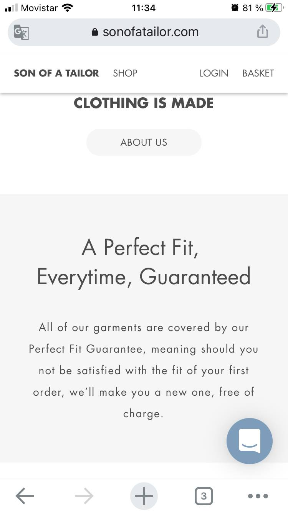
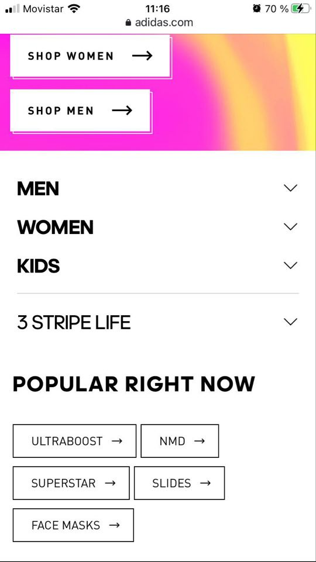

Contrast
Mercedes-Benz
Here we have good examples of contrast,the color palet seems to be good, the elements are clear to read , there is a harmony betwen the font colors and the background image .
Alignment
Son Of a Tailor
The whole page at this size is centred, it gives a formal but basic design, I think it looks good and fulfill the purpose and concept of the website
Repetition
Adidas
As we can see the patterns repeat again and again, the same alignment, font size , font color and the button style are the same.